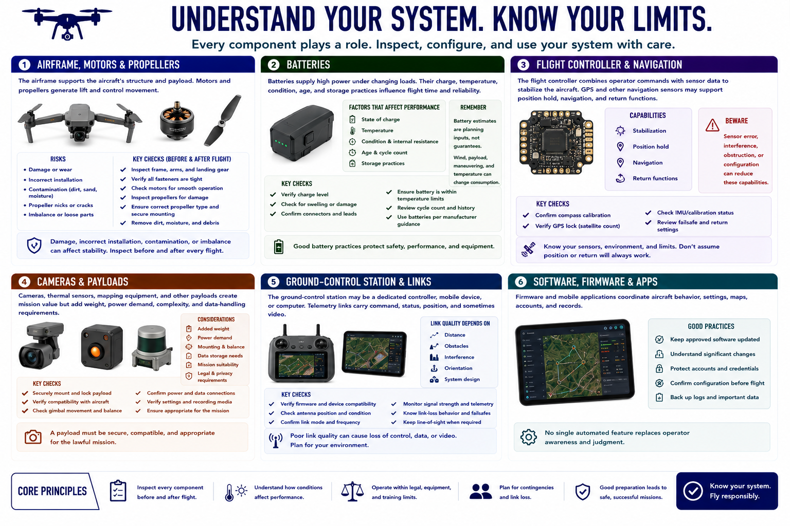

Drone System Components
Connecting to LMS... Progress: in progress

Narration
The airframe supports the aircraft's structure and payload. Motors and propellers generate lift and control movement. Damage, incorrect installation, contamination, or imbalance can affect stability, so these components require inspection before and after flight.
Batteries supply high power under changing loads. Their charge, temperature, condition, age, and storage practices influence flight time and reliability. Battery estimates are planning inputs, not guarantees; wind, payload, maneuvering, and temperature can change consumption.
The flight controller combines operator commands with sensor data to stabilize the aircraft. GPS and other navigation sensors may support position hold, navigation, and return functions. Sensor error, interference, obstruction, or configuration can reduce those capabilities.
Cameras, thermal sensors, mapping equipment, and other payloads create mission value but add weight, power demand, complexity, and data-handling requirements. A payload must be securely mounted, compatible with the aircraft, and appropriate for the lawful mission.
The ground-control station may be a dedicated controller, mobile device, or computer. Telemetry links carry command, status, position, and sometimes video. Link quality depends on distance, obstacles, interference, orientation, and system design.
Firmware and mobile applications coordinate aircraft behavior, settings, maps, accounts, and records. Keep approved software maintained, understand significant changes, protect accounts, and confirm configuration before flight. No single automated feature replaces operator awareness and judgment.